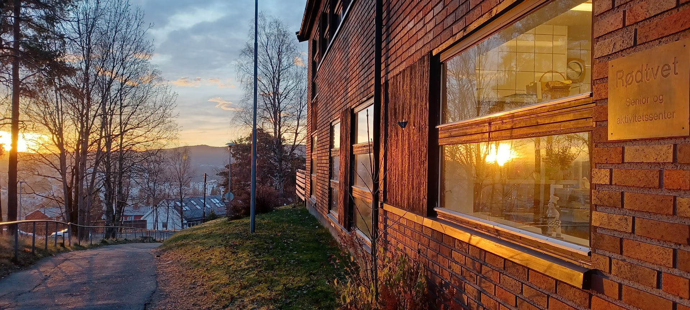

Rødtvet Seniorsenter
Ditt andre hjem
Informasjon
Senteret er bygget på stor grad av frivillighet. Frivillge bidrar som vertinner, sjåfører som betjener bussen vår og som kafémedhjelpere, i tillegg til å lede ulike aktiviteter. Frivillige bidrar også med løpende praktisk arbeid og på dugnader. Vi ønsker å være et inkluderende fellesskap med stort mangfold. Senteret tilbyr praksisplasser og tilrettelagte arbeidsplasser i samarbeid med Fretex Jobb, Hapro Karriereveiledning og NAV.
Aktiviteter
Tjenester
Frisør
Info om frisør
Fotpleie
info om fotpleie
Kjøretjeneste
info om kjøretjenste
Frivillig
Ønsker du å være frivillig.
Kom innom senteret og snakk med
Line eller ring på tlf: 408 80 171
Bildegalleri - kommer snart


Åpningstider
Mandag - Stengt
Tirsdag - 10-14
Onsdag - 10-14
Torsdag - 10-14
Fredag - Stengt
Lørdag - Stengt
Søndag - Stengt
Kontakt
Telefon: 408 80 171
E.post:
rodtvet.seniorsenter@kirken.no